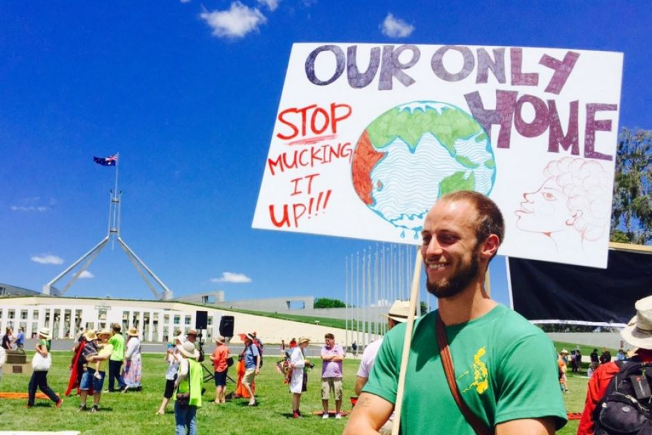

Use Fewer Resources
You’ve probably heard this before, either from conservation organizations or your parents lecturing you about the utility bill. But it’s worth repeating: conserving resources is good for everybody, especially the planet.
- Reduce water usage - Our use of water and energy are closely linked. Operational emissions from the water industry account for nearly 1% of the UK’s total carbon emissions. This is because water treatment is energy and chemical intensive and transporting water around the country requires a great deal of pumping. Reducing your water use will therefore have an impact on your carbon footprint.
- Use less electricity - Unless you’re using clean renewable energy, all the energy we use in our homes leads to additional carbon emissions. Over half of home energy is used for heating so the most important step homeowners can take is to make sure that the walls, roofs and windows are insulated, cutting back on heat waste.
Around half of UK homes are still using inefficient gas or oil boilers. When you come to replace your boiler, regulations require that you install an efficient, condensing model, along with new heating controls (if you don’t already have them). If you’ve still go an old-style inefficient boiler (anything fitted before 2005 will almost certainly be inefficient by today’s standards) think about whether now is the right time to change it, and save on carbon emissions.
- Eat less meat - The mighty hoofprint of farmed meat isn’t just inefficient. Deforestation to make way for livestock, along with methane emissions from cows and fertilizer use, creates as much greenhouse gas emissions as all the world’s cars, trucks and airplanes. Meat rearing practices risk mass extinctions of other animals, as well as spawn significant pollution of streams, rivers and, ultimately, the ocean.
In October 2018, scientists warned that huge reductions in meat eating are required if the world is to stave off dangerous climate change, with beef consumption in western countries needing to drop by 90%, replaced by five times more beans and pulses.
- Avoid plastic - Plastic production is expanding worldwide, fuelled in part by the fracking boom in the US. Studies say plastic contributes to greenhouse gas emissions at every stage of its lifecycle, from its production to its refining and the way it is managed as a waste product. Nearly all plastic – 99% – is made from fossil fuels.
- Drive less - We’re not talking about getting rid of your car, just using it a little bit less. It turns out that even driving just 10 percent less — if everyone did it — would have a big impact on greenhouse gas emissions.
A 10 percent cut, therefore, would be roughly 110 million metric tons of carbon dioxide, or the same as taking about 28 coal-fired power plants offline for a year.
Be an Advocate

It’s great if you change your habits, but to really save the planet, you’ll need to change others’, too. Convince your family, friends, and neighbors to adopt greener lifestyles. Talk to your parents about buying less meat, get your friends to bike to where you need to go, and sweet-talk your neighbors into watering their lawns less.
On March 15th 2019, an estimated 1.6 million students, in over 120 countries, left school to take part in a global movement for climate action. They were inspired by 16-year-old Greta Thunberg, a Swedish activist who started the first school strike for climate outside the Swedish Parliament building in August 2018.There are hundreds of online communities dedicated to raising awareness, and social media is a great resource for education, knowledge sharing and spreading the word.
Get involved with organizations like the Student Conservation Association where you can take part in conservation activities. Volunteer in your local park to make it a green space that people want to use. Support environmental groups. Talk to local politicians about focusing community resources on projects that improve the environment, and therefore the city, town, or neighborhood overall.